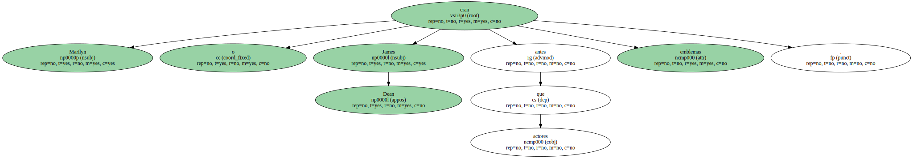

El Hollywood clásico quería que sus actores se volvieran estrellas y que su leyenda ( blanca o negra ) sustituyese al medidor de categoría artística.
Marilyn o James Dean antes que actores eran emblemas.
Incluso en actores tan firmes como Monty Clift , la leyenda , la nebulosa , su atracción por los precipicios ha concluido superponiéndose o , al menos , equilibrándose con su buen hacer.
Richard Gere goza fama de buen actor - y lo es - pero le sobrepasa su nombradía como galán.
Confieso que , personalmente , no le veo tanto carisma o tanto fulgor físico , pero las mujeres - y algunos hombres - le suelen encontrar altamente atractivo.
Dicen ciertas admiradoras que una pizca femenina en Gere ( blanda , suave , dócil ) es lo que encandila a las hembras de hoy , que ya no apuestan por el sietemachos pendenciero y bruto , sino por un hombre que posea algo de ambiguo.
Igual que Greta Garbo atraía a hombres y mujeres por su duplicidad , Richard Gere seduce a mujeres y a hombres.

Incluso se dice que su señora , Cindy Crowford - guapa , esbeltísima , modelo - es de las que prefieren los encantos del tercer sexo o , cuando menos , sus sugerencias.
En los Estados Unidos se especula mucho con la presunta homosexualidad de Gere y hasta circulan anécdotas picantes que la confirmarían.
Un venenillo llamado Michelangelo Signorile - norteamericano pese al nombre - inventó el outing.